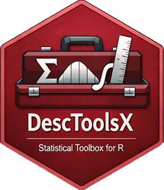

DescToolsX: Descriptive Statistics and Exploratory Data Analysis
Source:R/DescToolsX-package.R
DescToolsX.RdDescToolsX is the sequel to DescTools which provides a modern, consistent, and extensible framework for descriptive statistics, statistical tests, confidence intervals, and exploratory data analysis.
Details
The package is a deliberate redesign inspired by DescTools, with a strong emphasis on naming consistency, predictability, and avoidance of name clashes with base R and other packages.
Statistical summary functions that would otherwise mask base R functions are
suffixed with X (e.g. meanX(), sdX(), medianX()).
So functions ending in X are extended versions (typically supporting weights
or implementing confidence intervals) provided by DescToolsX and are
designed to coexist with base R functions without masking them.
DescToolsX follows a strict and consistent naming scheme to ensure predictability and to avoid name clashes with base R and other packages.
Consistency and predictability take precedence over historical base R naming conventions. This design choice is a key difference between DescToolsX and DescTools.
Design principles
DescToolsX follows a set of strict design principles to ensure consistency, usability, and performance across the entire package.
Further principles
Following section explain further principles valid throughout DescToolsX:
Formulas | Handling formulas |
Association | Association |
Agreement | Interrater agreement |
ConfidenceIntervals | Confidence intervals |
Association | Measures |
Association | Plots |
Statistical summary functions
Statistical functions that would otherwise mask base R functions are suffixed
with X. This explicitly signals an extended or modified implementation.
Examples:
meanX(), medianX(), sdX(), madX(), iqrX(),
varX(), quantileX(), skew(), kurt()
Confidence interval functions
Functions computing confidence intervals use the suffix CI, following
established R conventions.
Examples:
meanCI(), medianCI(), sdCI(), varCI(),
quantileCI()
Confidence interval functions follow the same argument order as their
corresponding point estimators. In particular, conf.level is always
used to specify the confidence level and appears explicitly as a named
argument.
Examples:
meanCI(x, conf.level = 0.95),
medianCI(x, conf.level = 0.95)
Statistical tests
Statistical tests use lower camelCase and end with Test.
Examples:
shapiroFranciaTest(), andersonDarlingTest(),
leveneTest(), jarqueBeraTest()
Plot functions
Plotting functions start with the prefix plot and use lower camelCase.
Examples:
plotQQ(), plotECDF(), plotCor(), plotViolin()
Plotting functions follow the same data-first argument convention. The data object is always the first argument, followed by plot-specific parameters and graphical options. This ensures intuitive usage and consistent behaviour across different plot types.
Examples:
plotQQ(x), plotECDF(x), plotCor(x, method = "spearman")
Classes and S3 methods
Classes use UpperCamelCase. S3 methods follow standard R conventions.
Examples:
desc.numeric, percTable, print.PercTable,
plot.Desc.numeric
Argument order
Function arguments follow a consistent and predictable order:
x(primary data object)method-specific parameters
confidence-related parameters (e.g.
conf.level)formatting and display options
...(additional arguments)
This ordering is applied uniformly across statistical summary functions, confidence interval functions, and plotting functions.
Performance and implementation
Computationally intensive functionality is systematically reimplemented using Rcpp. This replaces former pure R implementations and results in substantially improved runtime performance while preserving numerical accuracy and user-facing behaviour.
Performance improvements are a core design goal of DescToolsX and a key motivation for the package redesign.
pharos is listed in Depends because this package extends its user-facing API and expects it to be attached. Functions used internally are explicitly imported via the NAMESPACE.
Author
Maintainer: Andri Signorell andri@signorell.net (ORCID)
Authors:
Andri Signorell andri@signorell.net (ORCID)
Other contributors:
R Core Team [contributor]
Andreas Alfons [contributor]
Nanina Anderegg [contributor]
Antonio [contributor]
Tomas Aragon [contributor]
Antti Arppe [contributor]
Markus Brueckl [contributor]
Leanne Chhay [contributor]
Michael Dewey [contributor]
Harold C. Doran [contributor]
Romain Francois [contributor]
Matthias Gamer [contributor]
Vilmantas Gegzna [contributor]
Rob J. Hyndman [contributor]
Max Kuhn [contributor]
Jim Lemon [contributor]
Martin Maechler [contributor]
Arni Magnusson [contributor]
David Meyer [contributor]
Yongyi Min [contributor]
Cyril F. Moser [contributor]
Markus Naepflin [contributor]
Danielle Navarro [contributor]
Sandrine Pavoine [contributor]
Roland Rapold [contributor]
William Revelle [contributor]
Tyler Rinker [contributor]
Nathan Russell [contributor]
Luis Gustavo Schuck [contributor]
Michael Smithson [contributor]
Werner A. Stahel [contributor]
Mark Stevenson [contributor]
Ralf Stubner [contributor]
Matthias Templ [contributor]
Luis Torgo [contributor]
Gregory R. Warnes [contributor]
Daniel Wollschlaeger [contributor]
Joseph Wood [contributor]
Achim Zeileis [contributor]